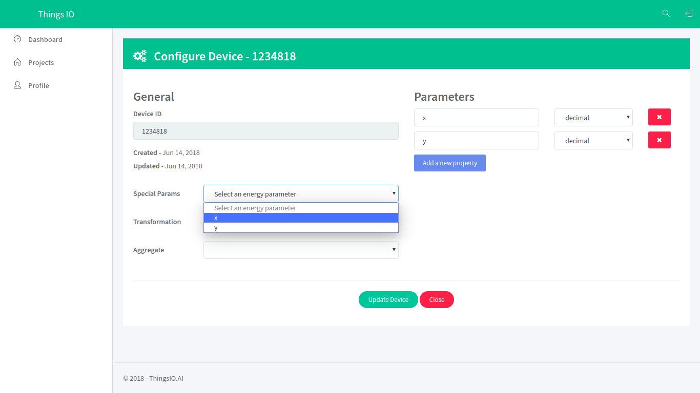

Getting started with ThingsIO.AI
Register the account in http://thingsio.ai/#/register.
Create a project:
Write the name of the project:
Now, you will be on the project dashboard of your account. Click on the new project option:
Click on the add a new device option:
Enter the device name and click on the create and configure device:
You will be on your device dashboard:
Track your device’s special parameters here. This can be set in device configuration (default to null).
You can see your real time and special parameter’s graph.
You can see your all data points.
You can see here your last 5 data points.
You can see here all the list of created graphs.
Go in sample device code options and click on the CC3200. You will get the sample code from there and paste into your CCS.
Click on the “Send trial data” to send a trial data to the server:
Now, click on the configuration device option.
You can set the special parameters (this is tracked on the device dashboard) & transform it accordingly and add new parameters (Parameters are updated automatically as you send them from your device).

Click on the update device option:
You can also set your device geographical location.
To create a graph for your device click on the “create graph option”.
Click on the preview option. You will see your created graph and click save changes.
Platform: Windows
Installation and settings of CC3200 and CCS:
Follow the installation and settings of CC3200 through this link: https://www.youtube.com/watch?v=xbh9I8waq5g
Go on project explorer-> file name and right click from mouse and go in properties. Include the file path in ARM compiler-> include options (#include search path)
"C:\TI\CC3200SDK_1.3.0\cc3200-sdk\netapps"
"C:\TI\ccsv6\tools\compiler\ti-cgt-arm_5.2.5\include"
"C:\TI\CC3200SDK_1.3.0\cc3200-sdk\netapps\json"
"C:\TI\CC3200SDK_1.3.0\cc3200-sdk\driverlib"
"C:\TI\CC3200SDK_1.3.0\cc3200-sdk\inc"
"C:\TI\CC3200SDK_1.3.0\cc3200-sdk\example\common"
"C:\TI\CC3200SDK_1.3.0\cc3200-sdk\simplelink"
"C:\TI\CC3200SDK_1.3.0\cc3200-sdk\simplelink\source"
"C:\TI\CC3200SDK_1.3.0\cc3200-sdk\simplelink_extlib\provisioninglib"
"C:\TI\CC3200SDK_1.3.0\cc3200-sdk\oslib"
"C:\TI\CC3200SDK_1.3.0\cc3200-sdk\netapps\http\client"
"C:\TI\CC3200SDK_1.3.0\cc3200-sdk\simplelink\include"
Include the file path in ARM linker-> file search
->Include library file or command file:
"libc.a"
"C:\TI\CC3200SDK_1.3.0\cc3200-sdk\driverlib\ccs\Release\driverlib.a"
"C:\TI\CC3200SDK_1.3.0\cc3200-sdk\simplelink\ccs\NON_OS\simplelink.a"
"C:\TI\CC3200SDK_1.3.0\cc3200-sdk\oslib\ccs\free_rtos\free_rtos.a"
"C:\TI\CC3200SDK_1.3.0\cc3200-sdk\netapps\json\ccs\Release\json.a"
“C:\TI\CC3200SDK_1.3.0\cc3200sdk\netapps\http\client\ccs\HTTPClientMinLib\webclient.a"
->Add <dir> to library search path
"${CG_TOOL_ROOT}/lib"
"C:\TI\CC3200SDK_1.3.0\cc3200-sdk\simplelink\include"
"${CC3200_SDK_ROOT}/netapps/json/ccs/Release/"
"C:\TI\CC3200SDK_1.3.0\cc3200-sdk\simplelink\ccs\OS"
"C:\TI\CC3200SDK_1.3.0\cc3200-sdk\netapps\http\client"
"C:\TI\CC3200SDK_1.3.0\cc3200-sdk\simplelink"
"C:\TI\CC3200SDK_1.3.0\cc3200-sdk\oslib\ccs\free_rtos"
"D:\webclient\HTTPClientMinLib"
Code modification:
Firstly, mention the host name and url respectively in main.c.
const char *soft_layer = "api.thingsio.ai"
#define CREATEA_SESSION_URI " /devices/deviceData "
Change the json data format like:
Change the device ID and slave_id.
{ "device_id": "integer", "dts": "date-time", "slave_id": "integer":, "data": {} }
Example:
#define POST_HEADER "{"
#define POST_timestamp "\n\"dts\":"
#define POST_DEVICEID ",\n\"device_id\":201426,"
#define POST_SLAVE "\n\"slave_id\":"
#define POST_HEADER1 "\n\"data\":"
#define POST_BEGIN "{"
//
//
//#define POST_CHUNK_1 "\n\"device_type\":"
//#define POST_CHUNK_2 "\n\"e_today\":"
//#define POST_CHUNK_3 "\n\"e_total\":"
//#define POST_CHUNK_4 "\n\"h_total\":"
//#define POST_CHUNK_5 "\n\"running_status\":"
//#define POST_CHUNK_25 "\n\"qac\":"
//
#define POST_END "\n}"
#define POST_TAIL1 "\n}"
Change the address and number of slave because here, we are using Modbus protocol. You can remove Modbus when you are using any sensor.
const int Adress[5] = {10001, 10002, 10004, 10006 ,10012}
Change slave name according to the address
const char*name_list[5] = {"device_type","e_today","e_total", "h_total" , "running_status"}
Construct_post_buffer()
Modify the case according to number of slaves :
start_val = 0;
end_val = 5;
break;
Change buffer location according to json data:
Example: strcpy(pcBufLocation,POST_HEADER);
pcBufLocation += strlen(POST_HEADER);
strcpy(pcBufLocation,POST_HEADER1);
pcBufLocation += strlen(POST_HEADER1);
In HTTPLoginMethod and HTTPPostMethod , please make sure that content type should be “application/json”.
For wi-fi settings, go in project explorer->your_file->/example/common->common.h
Change SSID_NAME, SECURITY_KEY and SECURITY_TYPE = “SL_SEC_TYPE_WPA” or WPA2
Plugin the CC3200 through USB cable. Check in device manager the port name and number.
Check the pin configuration and shorting of pins in CC3200.
Go in debug option and debug it.
Open the Hercules or tera-term application to see the output/procedure of the CC3200.
Go in serial and set the Name: according to your port number, Baud rate: 19200, Data size: 8 and Parity: none and open it.
Go in CCS and play the code.
You can see all the response from the server, login details, connection with the wi-fi etc. in Hercules or tera-term.